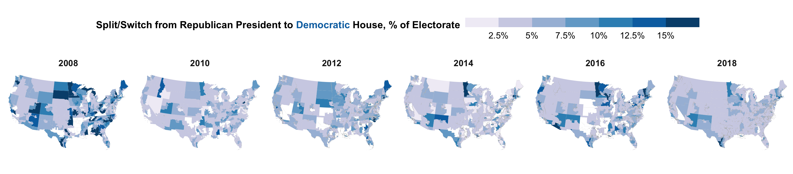

<div class="wrapper">
  <section>
    {% include_cached masthead.html %}
    <div align="left">
      
      
    </div>


            <div align="left">
              <h3 id="wp">Selected Working Papers / Recently Accepted</h3>
            </div>
            <p>
            <ul class="dashed">
              <li><a href="https://doi.org/10.31219/osf.io/db3mj">How Partisan are U.S. Local Elections? Evidence from 2020 Cast Vote Records</a>. (with Aleksandra Conevska, Shigeo Hirano, Can Mutlu, Jeffrey B. Lewis, and James M. Snyder, Jr.). To Revise and Resubmit. [Related Publication: <a href="https://www.nature.com/articles/s41597-024-04017-1">CVR Data</a>] </li>
                <details><summary>Abstract</summary>
                <p>Analyzing nominally partisan contests, previous literature has argued that state and local politics have nationalized. Here we use individual ballots from the 2020 general elections covering over 43 million voters to study the relationship between individual national partisanship and voting in over 4500 down-ballot contests, including nonpartisan races and ballot measures. Voting in partisan contests can be explained by voter’s national partisanship, consistent with existing literature. However, we find that voting for local nonpartisan offices (n = 1484 contests) and ballot measures (n = 1576) is much less partisan. National partisanship explains more than 80 percent of the within-contest variation in voting for partisan state and local offices but less than 10 percent for local spending-related ballot measures. Voting for spending on roads and water are less partisan than those on education and housing, and these votes are more correlated with each other than with national partisanship.</p>
                </details>
                <li><a href="https://www.science.org/doi/10.1126/sciadv.adt1512">Privacy Violations in Election Results</a>.  (with Jeffrey B. Lewis and Michael Morse). <b><i>Science Advances</i></b> (March 2025). Formerly titled The Still Secret Ballot: The Limited Privacy Cost of Transparent Election Results. [Featured in <a href="https://isps.yale.edu/news/blog/2025/03/privacy-vs-transparency-what-a-new-study-says-about-releasing-ballots">ISPS</a>, <a href="https://bipartisanpolicy.org/explainer/implications-of-making-ballot-images-and-cast-vote-records-public/">Bipartisan Policy Center Memo</a>, <a href="https://www.votebeat.org/texas/2024/06/26/fixing-texas-ballot-secrecy-problems-election-transparency/">Votebeat Texas</a>, <a href="https://www.votebeat.org/arizona/2025/01/09/arizona-counties-block-release-of-cast-vote-record-kari-lake-split-ticket/">Votebeat Arizona</a>] </li>
                <details><summary>Abstract</summary>
                  After an election, should election officials release a copy of each anonymous ballot? Some policymakers have championed public disclosure to counter distrust, but others worry that it might undermine ballot secrecy. We introduce the term vote revelation to refer to the linkage of a vote on an anonymous ballot to the voter's name in the public voter file, and detail how such revelation could theoretically occur. Using the 2020 election in Maricopa County, Arizona, as a case study, we show that the release of individual ballot records would lead to no revelation of any vote choice for 99.83% of voters as compared to 99.95% under Maricopa's current practice of reporting aggregate results by precinct and method of voting. Further, revelation is overwhelmingly concentrated among the few voters who cast provisional ballots or federal-only ballots. We discuss the potential benefits of transparency, compare remedies to reduce privacy violations, and highlight the privacy-transparency tradeoff inherent in all election reporting.
                </details>
                <li><a href="https://dx.doi.org/10.2139/ssrn.4371978">Winning Elections with Unpopular Policies: Valence Advantage and Single-Party Dominance in Japan.</a>  (with Yusaku Horiuchi and Daniel M. Smith). Accepted conditional on replication, <b><i>Quarterly Journal of Political Science</i></b>. Earlier versions coauthored with Shusei Eshima. Honorable mention for the 2024 Elections, Public Opinion, and Voting Behavior (EPOVB) best paper award</li>
                <details><summary>Abstract</summary>
                The existence of dominant parties in democracies is an enduring puzzle, in part because spatial models of voting suggest that an opposition party should be able to challenge the incumbent by proposing more popular policies. We consider the preeminent case of Japan's Liberal Democratic Party (LDP) and investigate whether its continued success can be explained by voters' support for its policies. We measure voters' policy-based utility for parties through a novel application of conjoint experiments featuring policy profiles based on parties' real-world manifestos and find that these utilities only partially explain vote choice. Most voters prefer the policies of the main opposition parties, but many nevertheless support the LDP. We interpret this discrepancy as arising from the LDP's advantage in terms of valence (non-policy considerations). An examination of which voters change preferences when policy profiles include party labels suggests that trust is an important component of the LDP's valence advantage.
                </details>
                <li><a href="papers/congress.pdf">Collective Representation in Congress</a> (with Stephen Ansolabehere). To Revise and Resubmit.</li>
                <details><summary>Abstract</summary>
                The U.S. Constitution created a Congress with both majoritarian and countermajoritarian forces. We take 103 important issues on the congressional decision agenda asked in the Cooperative Congressional Election Study from 2006 to 2022, and study whether corresponding legislative action sides with public opinion majorities. Congressional action or lack thereof was congruent with the majority of the public for 55  percent of these issues. Popular and polarizing issues tend to be passed by the House and blocked by the Senate, often without a recorded floor vote. Most representational failures coincide with either the Senate’s filibuster for polarizing issues, divided party control for unpolarized issues, or foreign policy. Senate malapportionment has limited explanatory power. The lessons from this study are that enacting bills into law is difficult, the institutional context of the issue is key to whether outcomes align with the public, but that it would be premature to declare that 55 percent success is antithetical to representative democracy. We speculate that Congress’s performance in reflecting majority opinion would look even better if one could poll on other issues that Congress handles.
                </details>
                <li>Preference Aggregation: A Seats Votes Curve for Issues. (with Stephen Ansolabehere). Full paper available upon request</li>
                <details><summary>Abstract</summary>
                How well does the U.S. electoral system of states and congressional districts aggregate voters' policy preferences? A century of research has studied how districts aggregate votes for parties into legislative seats, using the well-known seats-votes curve.  This paper develops the analog for issues, called the Issue Aggregation Curve, from the spatial model. The one-dimensional model characterizes choice over specific bills; the multidimensional model characterizes choice between two alternatives that consist of bundles of issues, such as party platforms or ideologies. We estimate the issue aggregation curves for 103 issues using data from the  CCES from 2006 to 2022.  The issue aggregation curves for the U.S. Senate and House exhibit little or no bias and have steep slopes, even steeper than the seats-votes curves.  These patterns reveal that the Senate and House districts magnify, rather than interfere with, the expression of the policy preferences of the majority.
                </details>
                <li> <a href="https://doi.org/10.1086/734263">Ticket Splitting in a Nationalized Era</a>. <b><i>The Journal of Politics</b></i>. 2025. [<a href="https://osf.io/preprints/socarxiv/bvgz3/">Preprint</a>] [Covered by  <a href="https://perma.cc/V83G-X9US"><i>The Post and Courier</i></a>, <a href="https://perma.cc/L4AV-2SWG "><i>Governing</i>, <a href="https://perma.cc/PH22-GDS7"><i>Colorado Public Radio News</i></a>].</li>
                <details><summary>Abstract</summary>
                <p>Party loyalty in U.S. Congressional elections has reached heights unprecedented in the post-war era. Theories of partisanship as informational cues would predict that ticket splitting from national partisanship should be even more rare in low-information elections. Yet, here I show that ticket splitting in state and local offices is often higher than in Congress. I use cast vote records from voting machines that overcome ecological inference challenges, and develop a clustering algorithm to summarize such ballot data.  For example, about a third of South Carolina Trump voters form a bloc whose probability of ticket splitting is 5 percent for Congress, but 32 percent for county council and 50 percent for sheriff. I show that a model with candidate quality differentials can explain these patterns: Even in a nationalized era, some voters cross party lines to vote for the more experienced and higher quality candidate in state and local elections. </p>
                </details>
                <!-- <li><a href="https://arxiv.org/abs/2105.05829">Synthetic Area Weighting for Measuring Public Opinion in Small Areas</a> (with Soichiro Yamauchi). [<a href ="papers/kuriwaki_syntharea_handout.pdf">Slides</a>]</li>  -->
                <!-- <details><summary>Abstract</summary>  -->
                  <!-- The comparison of subnational areas is ubiquitous, but survey samples of these areas are often biased or prohibitively small.  Researchers turn to methods such as multilevel regression and poststratification (MRP) to improve the efficiency of estimates by partially pooling data across areas via random effects.  However, the random effect approach can pool observations only through area-level aggregates. We instead propose a weighting estimator, the <i>synthetic area estimator</i>, which weights on variables measured only in the survey to partially pool observations <i>individually</i>. The proposed method consists of two-step weighting: first to adjust differences across areas and then to adjust for differences between the sample and population. Unlike MRP, our estimator can directly use the national weights that are often estimated from pollsters using proprietary information. Our approach also clarifies the assumptions needed for valid partial pooling, without imposing an outcome model. We apply the proposed method to estimate the support for immigration policies at the congressional district level in Florida. Our empirical results show that small area estimation models with insufficient covariates can mask opinion heterogeneities across districts.  -->
                <!-- </details> -->
              </ul>
            </p>

      <div align="left">
        <h3 id="pubs">Peer-Reviewed Publications</h3>
      </div>
      <div align="left">
        <h4>American Politics</h4>
      </div>
      <p>
        <ul class="dashed">
          <li><a href="https://www.nature.com/articles/s41597-024-04017-1">Cast Vote Records: A Database of Ballots from the 2020 U.S. Election</a> (with Mason Reece, and 12 others). 2024. [<a href="https://dataverse.harvard.edu/dataset.xhtml?persistentId=doi:10.7910/DVN/PQQ3KV">Dataset</a>] [<a href="https://www.arxiv.org/abs/2411.05020">Preprint</a>] [ISPS <a href="https://isps.yale.edu/news/blog/2024/10/newly-released-ballot-data-finds-ticket-splitting-among-republican-democratic">blog</a>] <b><i>Nature Scientific Data</i></b></li>
                <details><summary>Abstract</summary>
                Ballots are the basis of the electoral process. A growing group of political scientists, election administrators, and computer scientists have requested electronic records of actual ballots cast (cast vote records) from election officials, with the hope of affirming the legitimacy of elections and countering misinformation about ballot fraud. However, the administration of election data in the U.S. is scattered across local jurisdictions. Here we introduce a database of cast vote records from the 2020 U.S. general election. We downloaded, standardized, and extensively checked the accuracy of a set of cast vote records collected from the 2020 election. Our initial release includes six offices – President, Governor, U.S. Senate and House, and state upper and lower chambers – covering 40.9 million voters in 20 states who voted for a total of thousands of candidates, including 2,121 Democratic and Republican candidates. This database serves as an unparalleled source of data for studying voting behavior and election administration.
                </details>
          <li> <a href="https://doi.org/10.1017/S0003055423000436">The Geography of Racially Polarized Voting: Calibrating Surveys at the District Level</a>. (with Stephen Ansolabehere, Angelo Dagonel, and Soichiro Yamauchi). <b><i>American Political Science Review</i></b>, vol. 118, p. 922-939. 2024. [Open Access at APSR, <a href="https://osf.io/mk9e6/">preprint</a> with appendix and all estimates] [<a href="https://isps.yale.edu/news/blog/2023/07/racial-identity-explains-presidential-vote-choices-more-than-geography">ISPS</a> blog, <a href="https://www.wshu.org/connecticut-news/2023-07-31/race-explains-presidential-vote-choices-more-than-geography-yale-study-finds">WSHU</a> radio] [<a href="https://doi.org/10.7910/DVN/VX5N1V">Replication</a>, <a href="https://doi.org/10.7910/DVN/MAZNJ6">Data Release</a>] [Software: <a href="https://www.shirokuriwaki.com/ccesMRPprep">ccesMRPprep</a>, <a href="https://www.shirokuriwaki.com/ccesMRPrun">ccesMRPrun</a>, <a href="https://www.shirokuriwaki.com/synthjoint">synthjoint</a>] [<a href="https://docs.google.com/presentation/d/1ShGoIVs5OET3eg53EqNKgNd5MRTxrw0t8oaQ-kqWQnM">WISM slides</a>] </li>
           <details><summary>Abstract</summary>
                <p>Debates over racial voting, and over policies to combat vote dilution, turn on the extent to which groups' voting preferences differ and vary across geography. We present the first study of racial voting patterns in every congressional district in the US. Using large-sample surveys combined with aggregate demographic and election data, we find that national-level differences across racial groups explain 60 percent of the variation in district-level voting patterns, while geography explains 30 percent. Black voters consistently choose Democratic candidates across districts, while Hispanic and White voters’ preferences vary considerably across geography. Districts with the highest racial polarization are concentrated in the parts of the South and Midwest. Importantly, multi-racial coalitions have become the norm: in most congressional districts, the winning majority requires support from minority voters. In arriving at these conclusions, we make methodological innovations that improve the precision and accuracy when modeling sparse survey data.</p>
           </details>
          <li><a href="https://www.pnas.org/doi/10.1073/pnas.2217322120">Widespread Partisan Gerrymandering Mostly Cancels Nationally, but Reduces Electoral Competition</a> [ISPS <a href="https://isps.yale.edu/news/blog/2023/06/partisan-gerrymandering-mostly-cancels-out-at-national-level-study-shows">blog</a>] (with Christopher Kenny, Cory McCartan, Tyler Simko, and Kosuke Imai). <b><i>Proceedings of the National Academy of Sciences (PNAS)</b></i>, vol. 120 (25)</li>
            <details><summary>Abstract</summary>
                  Redistricting plans in legislatures determine how voters' preferences are translated into representative's seats. Political parties may manipulate the redistricting process to gain additional seats and insulate incumbents from electoral competition, a process known as <i>gerrymandering</i>.  But detecting gerrymandering is difficult without a representative set of alternative plans that comply with the same geographic and legal constraints. Harnessing recent algorithmic advances in sampling, we study such a collection of alternative redistricting plans that can serve as a non-partisan baseline. This methodological approach can distinguish electoral bias due to partisan effects from electoral bias due to other factors.  We find that Democrats are structurally and geographically disadvantaged in House elections by 8 seats, while partisan gerrymandering disadvantages them by 2 seats.
             </details>
          <li><a href="https://cces.gov.harvard.edu/files/cces/files/AnsolabehereKuriwaki_AJPS.pdf"> Congressional Representation: Accountability from the Constituent’s Perspective.</a> (with Stephen Ansolabehere). <b><i>American Journal of Political Science</i></b>. 2022. [Summarized in the <a href="https://ajps.org/2021/07/26/congressional-representation-accountability-from-the-constituents-perspective/">AJPS Blog</a>] [<a href="https://doi.org/10.7910/DVN/QOVWMM">Data</a>]</li>
          <details>
            <summary>Abstract</summary>
            The premise that constituents hold representatives accountable for their legislative decisions undergirds political theories of democracy and legal theories of statutory interpretation. But studies of this at the individual level are rare, examine only a handful of issues, and arrive at mixed results. We provide an extensive assessment of issue accountability at the individual level. We trace the congressional rollcall votes on 44 bills across seven Congresses (2006-2018), and link them to constituent's perceptions of their representative's votes and their evaluation of their representative.  Correlational, instrumental variables, and experimental approaches all show that constituents hold representatives accountable. A one-standard deviation increase in a constituent's perceived issue agreement with their representative can improve net approval by 35 percentage points.  Congressional districts, however, are heterogeneous. Consequently, the effect of issue agreement on vote is much smaller at the district-level, resolving an apparent discrepancy between micro and macro studies.
          </details>
          <li><a href="https://doi.org/10.1017/S0003055419000170">Wealth, Slave Ownership, and Fighting for the Confederacy: An Empirical Study of the American Civil War.</a>  (with Andrew B. Hall and Connor Huff). <b><i>American Political Science Review</i></b>, vol. 113, p. 658-673. 2019. [Covered by <a
            href="https://www.iheart.com/podcast/8-voxs-the-weeds-27868384/episode/building-the-trump-state-43587864/">The Weeds</a> podcast] [<a href="https://doi.org/10.7910/DVN/RRBPUD">Data</a>]</li>
            <details><summary>Abstract</summary>
              How did personal wealth and slaveownership affect the likelihood Southerners fought for the Confederate Army in the American Civil War? On the one hand, wealthy Southerners had incentives to free-ride on poorer Southerners and avoid fighting; on the other hand, wealthy Southerners were disproportionately slaveowners, and thus had more at stake in the outcome of the war. We assemble a dataset on roughly 3.9 million free citizens in the Confederacy and show that slaveowners were more likely to fight than non-slaveowners. We then exploit a randomized land lottery held in 1832 in Georgia. Households of lottery winners owned more slaves in 1850 and were more likely to have sons who fought in the Confederate Army. We conclude that slaveownership, in contrast to some other kinds of wealth, compelled Southerners to fight despite free-rider incentives because it raised their stakes in the war’s outcome.
            </details>
          </ul>
        </p>
        <div align="left">
          <h4>Survey Statistics and Demography</h4>
        </div>
        <p>
          <ul class="dashed">
              <li><a href="https://arxiv.org/abs/2306.07521">Evaluating Bias and Noise Induced by the U.S. Census Bureau's Privacy Protection Methods</a> (with Christopher T. Kenny, Cory McCartan, Tyler Simko, Kosuke Imai)). <b><i>Science Advances</i></b>, forthcoming. [<a href="https://doi.org/10.7910/DVN/TMIN3H">Data</a>]</li>
                <details><summary>Abstract</summary>
                  The United States Census Bureau faces a difficult trade-off between the accuracy of Census statistics and the protection of individual information. We conduct the first independent evaluation of bias and noise induced by the Bureau's two main disclosure avoidance systems: the TopDown algorithm employed for the 2020 Census and the swapping algorithm implemented for the three previous Censuses. Our evaluation leverages the Noisy Measure File (NMF) as well as two independent runs of the TopDown algorithm applied to the 2010 decennial Census. We find that the NMF contains too much noise to be directly useful, especially for Hispanic and multiracial populations. TopDown's post-processing dramatically reduces the NMF noise and produces data whose accuracy is similar to that of swapping. While the estimated errors for both TopDown and swapping algorithms are generally no greater than other sources of Census error, they can be relatively substantial for geographies with small total populations.
                </details>
            <li><a href="https://arxiv.org/abs/2210.08383"> Comment: The Essential Role of Policy Evaluation for the 2020 Census Disclosure Avoidance System</a> (with Christopher T. Kenny, Cory McCartan, Evan T. R. Rosenman, Tyler Simko, Kosuke Imai). <i><b>Harvard Data Science Review</b></i>, Jan 2023.  [HDSR <a href="https://doi.org/10.1162/99608f92.abc2c765">DOI</a>]</li>
                <details><summary>Abstract</summary>
                  In "Differential Perspectives: Epistemic Disconnects Surrounding the US Census Bureau's Use of Differential Privacy," boyd and Sarathy argue that empirical evaluations of the Census Disclosure Avoidance System (DAS), including our published analysis, failed to recognize how the benchmark data against which the 2020 DAS was evaluated is never a ground truth of population counts. In this commentary, we explain why policy evaluation, which was the main goal of our analysis, is still meaningful without access to a perfect ground truth. We also point out that our evaluation leveraged features specific to the decennial Census and redistricting data, such as block-level population invariance under swapping and voter file racial identification, better approximating a comparison with the ground truth. Lastly, we show that accurate statistical predictions of individual race based on the Bayesian Improved Surname Geocoding, while not a violation of differential privacy, substantially increases the disclosure risk of private information the Census Bureau sought to protect. We conclude by arguing that policy makers must confront a key trade-off between data utility and privacy protection, and an epistemic disconnect alone is insufficient to explain disagreements between policy choices.
                </details>
            <li><a href="https://www.nature.com/articles/s41586-021-04198-4">Unrepresentative Big Surveys Significantly Overestimated US Vaccine Uptake.</a> (with Valerie C. Bradley, Michael Isakov, Dino Sejdinovic, Xiao-Li Meng, and Seth Flaxman; co-first author with Bradley). <i><b>Nature</b></i>, vol. 600, p. 695-700. 2021. [Covered by <a href="https://news.harvard.edu/gazette/story/2021/12/vaccination-surveys-fell-victim-to-big-data-paradox-harvard-researchers-say/">Harvard Gazette</a>] [<a href="https://github.com/vcbradley/ddc-vaccine-US">Data</a>]</li>
                <details><summary>Abstract</summary>
                      Surveys are a crucial tool for understanding public opinion and behaviour, and their accuracy depends on maintaining statistical representativeness of their target populations by minimizing biases from all sources. Increasing data size shrinks confidence intervals but magnifies the effect of survey bias: an instance of the Big Data Paradox. Here we demonstrate this paradox in estimates of first-dose COVID-19 vaccine uptake in US adults from 9 January to 19 May 2021 from two large surveys: Delphi–Facebook (about 250,000 responses per week) and Census Household Pulse (about 75,000 every two weeks). In May 2021, Delphi–Facebook overestimated uptake by 17 percentage points (14–20 percentage points with 5% benchmark imprecision) and Census Household Pulse by 14 (11–17 percentage points with 5% benchmark imprecision), compared to a retroactively updated benchmark the Centers for Disease Control and Prevention published on 26 May 2021. Moreover, their large sample sizes led to miniscule margins of error on the incorrect estimates. By contrast, an Axios–Ipsos online panel with about 1,000 responses per week following survey research best practices provided reliable estimates and uncertainty quantification. We decompose observed error using a recent analytic framework to explain the inaccuracy in the three surveys. We then analyse the implications for vaccine hesitancy and willingness. We show how a survey of 250,000 respondents can produce an estimate of the population mean that is no more accurate than an estimate from a simple random sample of size 10. Our central message is that data quality matters more than data quantity, and that compensating the former with the latter is a mathematically provable losing proposition.
                </details>
             <li><a href= "https://www.science.org/doi/10.1126/sciadv.abk3283">The Use of Differential Privacy for Census Data and its Impact on Redistricting: The Case of the 2020 U.S. Census.</a> (with Chris Kenny, Cory McCartan, Evan Rosenman, Tyler Simko, and Kosuke Imai). <b><i>Science Advances</i></b>, vol. 7, eabk3283. 2021.  Originally a Public Comment to the Census Bureau (May 28, 2021). [<a href="https://alarm-redist.github.io/posts/2021-06-02-das-evaluation-faq/">FAQ</a>, <a href="https://alarm-redist.github.io/posts/2021-06-09-dsep-decision-response/">Reaction to the Bureau's Response (June 9, 2021)</a>.] [<a href="https://doi.org/10.7910/DVN/TNNSXG">Data</a>]</li>
                <details><summary>Abstract</summary>
                    Census statistics play a key role in public policy decisions and social science research. Yet given the risk of revealing individual information, many statistical agencies are considering disclosure control methods based on differential privacy, which add noise to tabulated data. Unlike other applications of differential privacy, however, census statistics must be post-processed after noise injection to be usable. We study the impact of the US Census Bureau's new Disclosure Avoidance System (DAS) on a major application of census statistics: the redrawing of electoral districts. We find that the DAS systematically undercounts the population in mixed-race and mixed-partisan precincts, yielding unpredictable racial and partisan biases. The DAS also leads to a likely violation of "One Person, One Vote" standard as currently interpreted, but does not prevent accurate predictions of an individual's race and ethnicity. Our findings underscore the difficulty of balancing accuracy and respondent privacy in the Census.
                    </details>
                <details><summary>Selected Press Coverage</summary>
                  Covered by  <a href="https://apnews.com/article/business-census-2020-technology-e701e313e841674be6396321343b7e49"><i>AP News</i></a>, <a href="https://www.washingtonpost.com/local/social-issues/2020-census-differential-privacy-ipums/2021/06/01/6c94b46e-c30d-11eb-93f5-ee9558eecf4b_story.html"><i>Washington Post</i></a>, <a href="https://www.thecrimson.com/article/2021/6/16/researchers-identify-concerns-census-bureau/"><i>The Harvard Crimson</i></a>, <a href="https://www.sfchronicle.com/us-world/article/The-most-detailed-data-about-the-US-population-in-16378154.php"><i>San Francisco Chronicle</i></a>, <a href="https://www.slowboring.com/p/census-privacy"><i>Matthew Yglesias blog</i></a>, Statistical Modeling (Andrew Gelman's blog) by Jessica Hullman (<a href="https://statmodeling.stat.columbia.edu/2021/10/20/how-does-post-processed-differentially-private-census-data-affect-redistricting-how-concerned-should-we-be-about-gerrymandering-with-the-new-das/">Part 1</a>, <a href="https://statmodeling.stat.columbia.edu/2021/10/27/is-the-accuracy-of-bayesian-improved-surname-geocoding-bad-news-for-privacy-protection-at-the-census-technically-no-pr-wise-probably/">Part 2</a>)
                </details>
            <li><a href="https://hdsr.mitpress.mit.edu/pub/cnxbwum6">Towards Principled Unskewing: Viewing 2020 Election Polls Through a Corrective Lens from 2016.</a> (with Michael Isakov). <b><i>Harvard Data Science Review</i></b>, vol. 2.4 (pre - 2020 election issue). 2020. [Covered by <a href="https://www.thecrimson.com/article/2020/11/2/2016-election-polls-kuriwaki-isakov/"> <i>The Harvard Crimson</i></a>] [<a href="https://osf.io/29pvm/">PDF version</a>  with post-election review] [<a href="https://codeocean.com/capsule/1721560/tree/v1">Data</a>] </li>
              <details><summary>Abstract</summary>
                We apply the concept of the data defect index (Meng, 2018) to study the potential impact of systematic errors on the 2020 pre-election polls in twelve Presidential battleground states. We investigate the impact under the hypothetical scenarios that (1) the magnitude of the underlying non-responses bias correlated with supporting Donald Trump is similar to that of the 2016 polls, (2) the pollsters' ability to correct systematic errors via weighting has not improved significantly, and (3) turnout levels remain similar as 2016. Because survey weights are crucial for our investigations but are often not released, we adopt two approximate methods under different modeling assumptions. Under these scenarios, which may be far from reality, our models shift Trump's estimated two-party voteshare by a percentage point in his favor in the median battleground state, and increases twofold the uncertainty around the voteshare estimate.
              </details>
            </ul>
          </p>


          <h4>Education in Political Science</h4>
          <p>
            <ul class="dashed">
              <li><a href="https://imai.fas.harvard.edu/research/files/50states.pdf">Simulated redistricting plans for the analysis and evaluation of redistricting in the United States</a> (with Cory McCartan, Christopher Kenny, Tyler Simko, George Garcia III, Kevin Wang, Melissa Wu, and Kosuke Imai). <b><i>Scientific Data</i></b>, 9, 689. 2022. [<a href="https://alarm-redist.github.io/fifty-states/">Website</a>] [<a href="https://dataverse.harvard.edu/dataset.xhtml?persistentId=doi:10.7910/DVN/SLCD3E">Dataverse</a>]</li>
              <details>
              <summary>Abstract</summary>
               This article introduces the 50stateSimulations, a collection of simulated congressional districting plans and underlying code developed by the Algorithm-Assisted Redistricting Methodology (ALARM) Project. The 50stateSimulations allow for the evaluation of enacted and other congressional redistricting plans in the United States. While the use of redistricting simulation algorithms has become standard in academic research and court cases, any simulation analysis requires non-trivial eforts to combine multiple data sets, identify state-specifc redistricting criteria, implement complex simulation algorithms, and summarize and visualize simulation outputs. We have developed a complete workfow that facilitates this entire process of simulation-based redistricting analysis for the congressional districts of all 50 states. The resulting 50stateSimulations include ensembles of simulated 2020 congressional redistricting plans and necessary replication data. We also provide the underlying code, which serves as a template for customized analyses. All data and code are free and publicly available. This article details the design, creation, and validation of the data.
              </details>
              <li><a href="https://gking.harvard.edu/files/gking/files/prefresher.pdf"> The "Math Prefresher" and The Collective Future of Political Science Graduate Training. </a> (with Gary King and Yon Soo Park). <b><i>PS: Political Science and Politics</i></b>, vol. 54, p. 537-541. 2020. </li>
              <details><summary>Abstract</summary>
                The political science math prefresher arose a quarter-century ago and has now spread to many of our discipline’s PhD programs. Incoming students arrive for graduate school a few weeks early for ungraded instruction in math, statistics, and computer science  as  they  relate  to  political  science.  The  prefresher’s  benefits,  however,  go  beyond  its  technical content: it opens pathways to mastering methods necessary for political science research, facilitates connections among peers, and &mdash; perhaps most important &mdash; eases the transition to the increasingly collaborative nature of graduate work. The prefresher also shows how faculty across a highly diverse discipline have worked together to train the next generation. We review this program and advance its collaborative aspects by building infrastructure to share teaching content across universities so that separate programs can build on one another’s work and improve all of our programs.</details>
              </ul>
            </p>


            <div align="left">
            <h3 id="teaching">Teaching</h3>
            </div>
            <ul class="dashed">
              <li> <b>PLSC 277: The U.S. Congress</b> (Undergraduate. Fall 2022, Spring 2024) [<a href="teaching/kuriwaki_congress_syl_AY23.pdf">Public Syllabus</a>, <a href="teaching/kuriwaki_congress_syl_AY22.pdf">2022 version</a>]</li>
                 <details><summary>Course Description</summary><p>The United States Congress is arguably the most powerful legislature in the world. Its actions—and inaction—affect taxes, healthcare, business, the environment, and international politics. To understand the nature of legislative power in Congress and in democracies more broadly, we ask: How do successful politicians become powerful? How do they navigate rules and institutions to their advantage? What is the proper role of the lawmaking in regulating private business? Should we limit legislative lobbying and put a cap on campaign contributions? Class discussions use case studies including the Civil Rights movement in the 1960s, the Tax Reform Act under Reagan, and the Affordable Care Act under Obama. Exercises include coding and data analysis. The goal is to equip students with a broad understanding of the principles of politics, economics, public policy, and data science.</p>
                  </details>
              <li> <b>PLSC 438/536: Applied Quantitative Research Design</b> (MA, Undergraduate, and Ph.D. Fall 2022, Fall 2023) [<a href="teaching/kuriwaki_AQRD_syl.pdf">Public Syllabus</a>]</li>
               <details><summary>Course Description</summary><p>Research designs are strategies to obtain empirical answers to theoretical questions. Research designs using quantitative data for social science questions are more important than ever. This class, intended for advanced students interested in social science research, trains students with best practices for designing and implementing rigorous quantitative research. We cover designs in causal inference, prediction, and missing data at a high level. This is a hands-on, application-oriented class. Exercises involve programming and statistics in addition to the social sciences (politics, economics, and policy). The final project advances a research question chosen in consultation with the instructor. </p> <p>Prerequisite: Any statistics or data science course that teaches ordinary least squares regression. Past or concurrent experience with a programming language such as R is strongly recommended.</p>
              </details>
              <li> <b>PLSC 862: American Elections with Comparative Perspective</b> (Spring 2023) [<a href="teaching/kuriwaki_AP-CP-elections_syl.pdf">Syllabus</a>]</li>
              <details><summary>Course Description</summary><p>This graduate-level seminar covers foundational work on electoral politics in the United States, with some comparisons with other countries' systems and domestic proposals for reform. Readings examine work on elite position-taking, re-election, federalism, representation, and electoral systems. Accompanying readings include similar and more recent articles in comparative politics, political economy, or election law. This course has two intended audiences: students in American Politics, and students outside American Politics interested in theories of electoral democracy developed in the American Politics subfield that have then been exported to other subfields. Class emphasizes empirical research designs and analysis of available datasets in addition to reading.</p>
</details>
      <li><b>Teaching Resources for R and Data Science</b>: See <a href="datascience">here</a> for a collection of resources for teaching data science in the social sciences I have accumulated over the years.</li>
</ul>

            <div align = "left">
              <h3 id="diss">Dissertation </h3>
            </div>
            <p>
              <ul class = "dashed">
                <li> <a href="https://dash.harvard.edu/handle/1/37368520">The Swing Voter Paradox: Electoral Politics in a Nationalized Era.</a> Ph.D. Dissertation, Harvard University.</li>
              </ul>
            </p>

            <h3 id="book">Book Project: <i>Representation in America</i></h3>

            <p>(with Stephen Ansolabehere)</p>

            <p>This book, tentatively titled <i>Representation in America</i>, argues that through all of the gridlock and the polarization that has plagued the government over the past three decades, the U.S. Congress remains a largely majoritarian institution.  Building on 15 years of data on public preferences of more than 500,000 Americans, this study examines what voters know, what they care about when they vote, and how well their legislators and their Congress reflect their preferences.  Representation is not a seamless or mechanical process, but it aggregates peoples' beliefs and preferences well on the important issues that face the country.  Individual voters do not follow the details of congressional legislation but most know enough to hold correct beliefs about legislation and to hold their representatives accountable.  The electoral system is very good at aggregating what the public wants and at moderating hyper-partisan views.  And, on just over a half of important bills under our study, Congress makes decisions in line with the majority of the nation.  As a result, representation in America, when it does fail, often fails because Congress does not have support among those layers of institutions. 
            </p>


              <div align="left">
                <h3 id="datasets">Datasets</h3>
              </div>
              <p>
                <ul class="dashed">
                  <li> The <b>Cast Vote Records</b> project is collecting and organizing public ballot image logs to advance the understanding of voting patterns in federal, state and local elections. One of the project's goals is to establish a relational database for such data. This project is one of the 2018 New Initiative Grants from the MIT Election Data and Science Lab. Please feel free to contact me for any questions about this my <a href="https://doi.org/10.31235/osf.io/bvgz3">job market paper</a> on partisan local elections, our <a href="https://doi.org/10.31219/osf.io/db3mj">2024 paper</a> on nonpartisan, state, and ballot measures, or our public <a href="https://dataverse.harvard.edu/dataset.xhtml?persistentId=doi:10.7910/DVN/PQQ3KV">data release</a> of 2020 CVRs covering President, Congress, and State Legislature.</li>
                  <li> The <a href="https://doi.org/10.7910/DVN/II2DB6">Cumulative CCES Common Content (2006-2022)</a> (downloaded on Dataverse over 20,000 times) is a part of the Cooperative Congressional Election Survey Dataverse. It combines all common content respondents of the CCES and harmonizes key variables, so that researchers can analyze all years of the CCES or merge in standardized variables with their own CCES datasets.</li>
                  <li> The <a href="https://doi.org/10.7910/DVN/DGDRDT">Candidates in American General Elections</a> dataset (with Jeremiah Cha and James M. Snyder, Jr.) is a comprehensive list of winning and losing candidates in U.S. Congressional, Presidential, and Gubernatorial elections. Unlike official records or other datasets, we standardize candidate names acorss time and office, and record the incumbency of the candidates.</li>
                  <li> The <a href="https://alarm-redist.github.io/fifty-states/">Fifty States Redistricting Simulations</a> project provides an ensemble of alternative maps for congressional districts that are simulated from state of the art redistricting software. These maps can be used to evaluate whether a proposed map is an outlier on any dimension. (as part of the ALARM team, with Cory McCartan, Christopher Kenny, Tyler Simko, George Garcia III, Kevin Wang, Melissa Wu, and Kosuke Imai) </li>
                  <li> <a href="https://www.shirokuriwaki.com/ccesMRPprep/">Portable Routines for Preparing CCES and ACS data for MRP (<tt>ccesMRPprep</tt>)</a> is a set of datasets and API interfaces to facilitate Multilevel Regression Poststratification (MRP), a survey weighting method for small area estimation.  Other articles already provide helpful tutorials and code for MRP. But implementing a MRP entails considerable upfront costs related to data  collection, cleaning, and standardization. This package provides these routines: not only modeling software, but code to import and standardize publicly available data sources, combined with detailed documentation about these data sources. </li>
                  </ul>
                </p>

                <hr>

                <p><small>
                  <b>About the banner image:</b> Survey data from the <a href="https://doi.org/10.7910/DVN/II2DB6">Cumulative CCES</a>, limited to validated voters in contested districts who voted for a major party in the Presidency and House. Estimates are
                  made at the congressional district level and use Multilevel Regression Poststratification (<a href="https://www.shirokuriwaki.com/ccesMRPprep/">MRP</a>) stratifying on age, gender, education from the ACS and using House candidate incumbency
                  status and presidential voteshare as district-level predictors. In presidential years the values represent ticket splitting (e.g. Trump voters who voted for a 2016 Democratic House candidate); in midterm years they represent party switch from
                  the previous presidential election (e.g. Trump voters who voted for a 2018 Democratic House candidate). Districts where a Democrat and Republican candidate did not contest the general election are left blank. <i>Figure created by Shiro
                    Kuriwaki.</i>
                  </small></p>
                  <p><small>
                    <b>About this website:</b> This website uses code from <a href="https://github.com/mmistakes/minimal-mistakes">Minimal Mistakes</a>, Github Pages, uses some CSS from Matt Blackwell's website at the time, and is inspired by Sirus Bouchat's <a
                    href="https://bouchat.github.io/">website</a> and Andrew Hall's <a href="http://www.andrewbenjaminhall.com/">website</a>.
                  </small></p>

                </section>
              </div>
